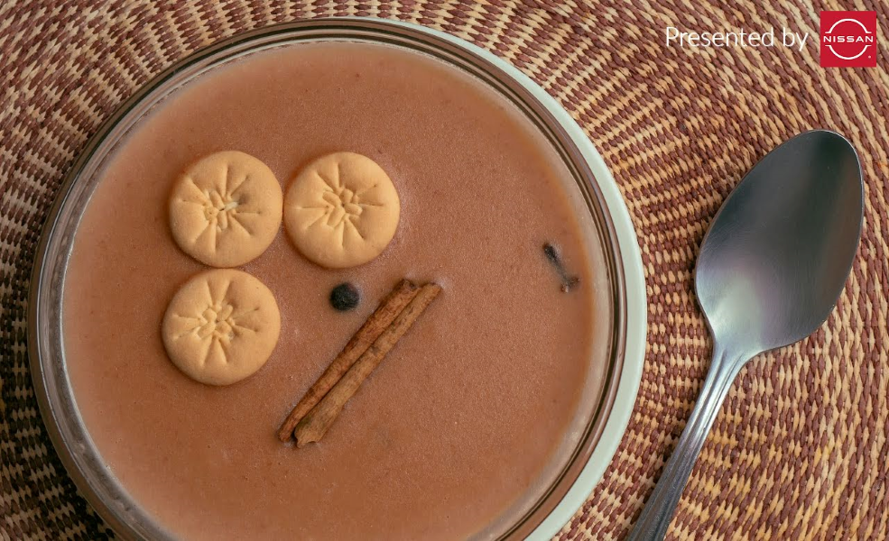

Habichuela con dulce

Description
This a dessert that we do in Semana Santa in DR, every family does it.
That is another way of reuniting of ours. We watch movies and talk
It might sound weird or something but you gotta taste first with closed eyes!.
Ingredients
- 2 pounds dry red kidney beans
- 6 (3 inch) cinnamon sticks
- 2 pounds white sweet potatoes, peeled
- 3 ½ cups milk
- 2 (12 fluid ounce) cans evaporated milk
- 1 (14 ounce) can coconut milk
- 3 cups white sugar
- 1 ½ cups sweetened condensed milk
- 1 teaspoon ground cinnamon
- 1 teaspoon ground nutmeg
- ½ teaspoon ground cloves, or to taste
- 1 cup raisins
- 4 teaspoons unsalted butter
- 2 teaspoons salt
- 2 teaspoons vanilla extract
- 1 pinch ground ginger
Steps
Step 1
-
Place beans and cinnamon sticks in a large pot and add water to cover by 2 inches; bring to a boil. Boil for 2 to 3 minutes. Remove from the heat, cover, and let soak for 1 hour.
Step 2
-
Cube sweet potatoes and place in a large pot. Cover with salted water and bring to a boil. Reduce heat to medium-low and simmer until tender, about 20 minutes. Drain.
Step 3
-
Puree beans and soaking water with an immersion blender until smooth. Pass blended beans through a colander.
Step 4
-
Add milk, evaporated milk, and coconut milk. Turn on the heat to medium and add sugar, condensed milk, cinnamon, nutmeg, and cloves. Cook, stirring every once in a while, for 15 minutes. Add sweet potatoes, raisins, butter, salt, vanilla, and ginger. Reduce heat to low and cook, stirring every now and then, for 15 more minutes.